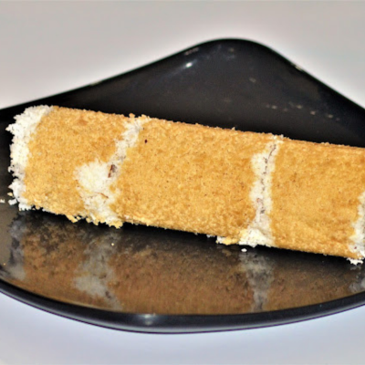
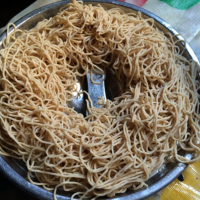
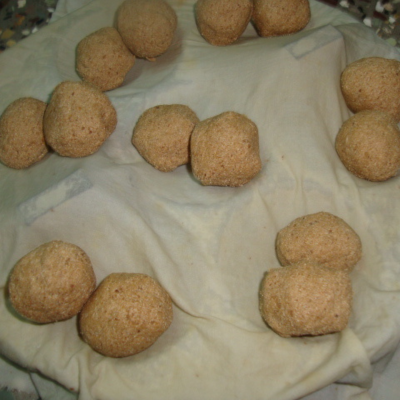
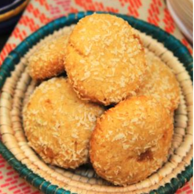

CONNECT WITH HEALTHY LIFE
CONNECT WITH HEALTHY LIFE

தேவையான பொருட்கள்:
செய்முறை:
1. அகலமான பாத்திரத்தில் பீஜே திணை மாவு, உப்பு & ஏலக்காய் தூள் சேர்க்கவும்.
 2. பின்னர் கொதிக்க வைத்த தண்ணீர் தெளித்து பிசையவும். பிசைந்து பின் புட்டு குழாயில் போடவும்.
3. தினை மாவு தேங்காய் இரண்டையும் ஒன்றன் பின் ஒன்றாக போட்டு நிரப்பி புட்டு பாத்திரத்தில் வேக வைத்து எடுக்கவும்.
2. பின்னர் கொதிக்க வைத்த தண்ணீர் தெளித்து பிசையவும். பிசைந்து பின் புட்டு குழாயில் போடவும்.
3. தினை மாவு தேங்காய் இரண்டையும் ஒன்றன் பின் ஒன்றாக போட்டு நிரப்பி புட்டு பாத்திரத்தில் வேக வைத்து எடுக்கவும்.
4. இப்போது சுவையான தினை மாவு புட்டு தயார்.

தேவையான பொருட்கள்:
செய்முறை:
1. கடாயில் நிலக்கடலையை வறுத்து ஏலக்காயுடன் பொடியாக்கி கொள்ளவும்.
2. வெல்லத்தை பாகு போல் காய்ச்சி வடிக்கட்டிக் கொள்ளவும்.
3. பீஜே தினை மாவுடன்,, நிலக்கடலை& ஏலக்காய் பொடியுடன் நன்கு கலந்துக்கொள்ளவும்.
4. வெல்ல பாகுவை சிறிது சிறிதாக சேர்த்து உருண்டை பிடிப்பதற்கு ஏற்ற பதத்திற்கு நெய் ஊற்றி உருண்டைகளாக பிடிக்கவும்.
5. தினை மாவு உருண்டை தயார்.

தேவையான பொருட்கள்:
செய்முறை:
1. பீஜே தினை மாவை, அரிசி மாவுடன், உப்பு சேர்த்து நன்கு கலக்கவும்.
2. மிதமான தீயில் 1 முதல் 1 1/2 கப் தண்ணீரை சூடாக்கவும். சில துளிகள் எண்ணெய் சேர்க்கவும்.
3. கொதிக்க ஆரம்பித்ததும் தீயை அணைத்து இறக்கவும்.
4. படிப்படியாக மாவு கலவையில் தண்ணீரைச் சேர்த்து, சப்பாத்தி மாவு நிலைத்தன்மையைப் பெறும் வரை நன்கு கலக்கவும்.
 5. சிறிய-நடுத்தர உருண்டைகளை செய்து இடியாப்ப குழலில் வைக்கவும்.
5. சிறிய-நடுத்தர உருண்டைகளை செய்து இடியாப்ப குழலில் வைக்கவும்.
6. நடுத்தர அளவிலான இடியாப்பம் செய்து, இட்லி தட்டுகளில் வேகவைக்கவும்.

7. குருமா அல்லது விருப்பமான சைட் டிஷ் உடன் பரிமாறவும்.
தேவையான பொருட்கள்:
செய்முறை:
1. கடாயில் பனை வெல்லம் ,1 டீஸ்பூன் ஏலக்காய் தூளை 1/2 கப் தண்ணீரில் கரைக்கவும்.
2. அசுத்தங்களை வடிகட்டி, பாகுவை ஒதுக்கி வைக்கவும்.
3. பாத்திரம் சூடானதும் நெய் மற்றும் நறுக்கிய முந்திரி பருப்பை சேர்க்கவும். பொன்னிறமாகும் வரை வறுக்கவும்.
4. பின்னர் தயார் செய்த வெல்லம் பாகு சேர்க்கவும்.
5. கலவை கொதி வந்ததும் பீஜே தினை மாவை தொகுப்பாக சேர்க்கவும்.மாவு கைகளில் ஒட்டாமல் இருக்கும் பதத்திற்கு கிண்டவும்.
6. இப்போது ஒரு கொழுக்கட்டை வடிவத்தை உருவாக்கி மாவை, இட்லி பாத்திரத்தில் 5 நிமிடம் அடுப்பில் வைத்து ஆவியில் வேக வைக்கவும்.

தேவையான பொருட்கள்:
செய்முறை:
1. வெல்லம் மற்றும் ஏலக்காயை நன்றாக தூளாக அரைக்கவும். மாவை நல்ல வாசனை வரும் வரை வறுக்கவும்.
2. ஒரு அகலமான பாத்திரத்தில், வெண்ணெய் பஞ்சு போல் மாறும் வரை கிண்டவும்.
3. வெல்லம் தூள் சேர்க்கவும். அவை பஞ்சுபோன்ற மற்றும் லேசான கலவை உருவாகும் வரை மீண்டும் ஒன்றாக கிண்டவும்.
4. தினை மாவு, கோதுமை மாவு, பேக்கிங் பவுடர் மற்றும் உப்பு ஆகியவற்றை ஒரு சல்லடையில் சேர்க்கவும்.
5. அனைத்தையும் ஒன்றாக சலிக்கவும்.
6. வெண்ணெயை கலவையுடன் மெதுவாக கலக்கவும்.
7. உலர்ந்த தேங்காய் சேர்த்து மீண்டும் கலக்கவும்.
8. பால் அல்லது தேங்காய் பால் சேர்த்து உறுதியான மாவை உருவாக்கவும்.
9. மாவின் ஒரு சிறிய பகுதியை எடுத்து வடிவங்களை உருவாக்கவும்.
10. அதன் மேல் சிறிது சர்க்கரை மற்றும் சில துண்டுகளாக்கப்பட்ட பாதாம் தூவவும்.
11. இப்போது ப்ரீஹீட் செய்யப்பட்ட அவனில் 7-8 நிமிடங்கள் பேக் செய்யவும்.
12. அனைத்து மாவும் பயன்படுத்தப்படும் வரை செயல்முறையை மீண்டும் செய்யவும்.
13. 20-25 நிமிடங்கள் ஆறவிடவும்.

14. இப்போது நீங்கள் சுவையான தினை குக்கீகளுடன் தயாராக உள்ளீர்கள்.